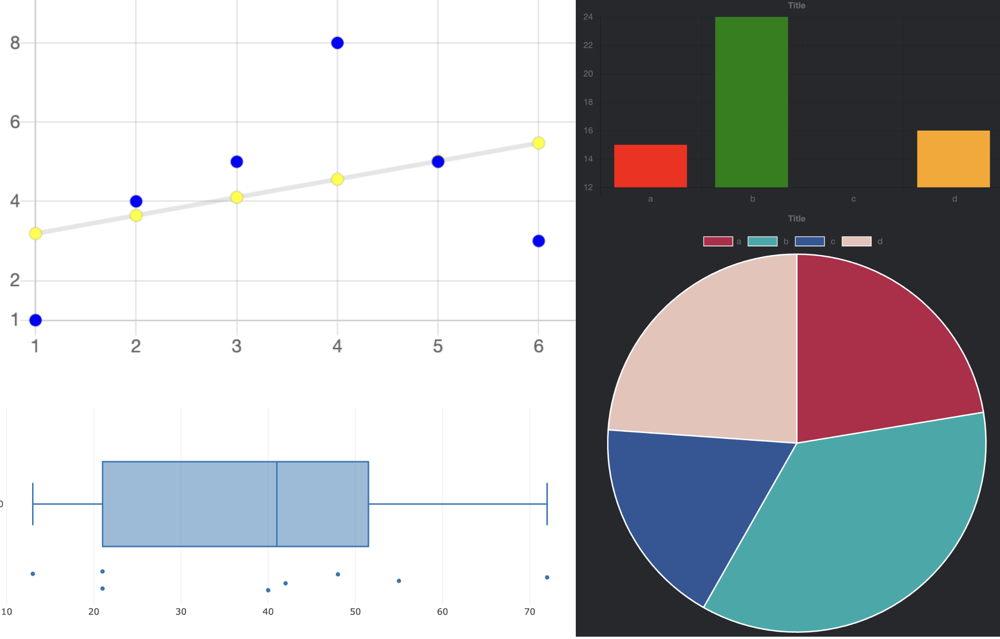

- Projects -
Pygame AI
I dont have a little description for this yet lol
image placeholder
Tank Domination
- Developed an interactive game that incorporates realistic impact physics, Line of Sight (LoS) detection, and advanced enemy AI to create an engaging and dynamic user experience. The game simulates tank combat with advanced object-oriented programming principles, offering a seamless and responsive gameplay environment.
- Multi-level - Object-Oriented Programming
- Technologies: HTML, CSS, JavaScript, P5.js Library, Visual Studio Code, GitHub
image placeholder
Graphic-Based Adventure Game
- Developed a console-based graphic adventure game featuring grid-based, turn-based, melee and ranged combat mechanics (you heard me right: graphics in the console). Implemented advanced enemy AI with smart decision-making and pathfinding algorithms, enhancing gameplay strategy and player experience. Focused on optimizing back-end systems to ensure smooth game performance and intelligent enemy interactions.
- Front-end and Back-End Development
- Technologies: Python, Visual Studio Code
image placeholder
Instrument String Optimizer Mobile Application
- App Developement (in progress)
- Developing a mobile application designed for string musicians to track, manage, and optimize their string usage. Changing strings regularly is important for string musicians as the sound quality degrades over time. Different brands come with different sounds too! This app enables users to log and view the history of strings they’ve used, along with associated brands and their sound characteristics. This helps musicians optimize their instrument's performance and make informed decisions about string selection.
- Technologies: iOS, XCode, Swift (Apple Development Language)
image placeholder
Human immune response research & educational video
- Immunology
- Produced an informative and engaging educational video focused on the human immune system, highlighting its critical role, interactions with other bodily systems, common deficiencies, and recent advancements in immunological research. The video aims to enhance understanding of immunology through clear visuals, narration, and music, making complex scientific concepts accessible to a broad audience.
- Technologies: Video Animation/Editing
image placeholder
Scientific Paper
- On how listening to Classical Music can help reduce stress and improve grades in IB students
- (Statistical Analysis and Cardiology)
- Conducted a statistical analysis on the effects of classical music on stress levels and academic performance among IB students. The study, involving a sample size of 20 students, found that fast classical music increased heart rate (HR) by 1.76% and raised blood pressure (BP) by 2.03%/9.86%, while lyrical or melancholic classical music resulted in a significant reduction in HR by 2.8% and BP by 3.95%/0.24%. The findings support the hypothesis that slow classical music can help reduce stress levels in students, potentially enhancing their academic performance.
- Field / Technique: Cardiology, Music Therapy, and Statistical Analysis Techniques
image placeholder
Statistics and Regression Graphing Tool
- Statistical Analysis and Full Stack Development
- Designed and developed a user-friendly web application aimed at high school students and researchers, enabling them to calculate and visualize key statistical metrics, including central tendency, measures of spread, scatter plots, box plots, line of best fit (using linear regression), bar graphs, and pie charts. The tool serves as an intuitive, all-in-one platform for structuring and analyzing data, helping users better understand and interpret statistical information.
- Technologies: GitHub, Visual Studio Code, HTML, CSS, JavaScript

Geometry and Trig Calculator
- Euclidean, Analytical Geometry, and FullStack
- Designed and developed a web-based calculator that enables users to calculate parameters of various 2D and 3D shapes, including area, volume, perimeter, and angles, using Euclidean and analytical geometry principles. The application provides a quick, on-the-go tool for solving complex geometric and trigonometric problems.
- Technologies: HTML, JavaScript, Visual Studio Code, GitHub

Charity concerts
- I dont have a description for this yet.
image placeholder